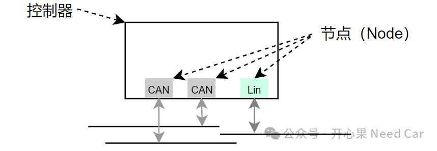
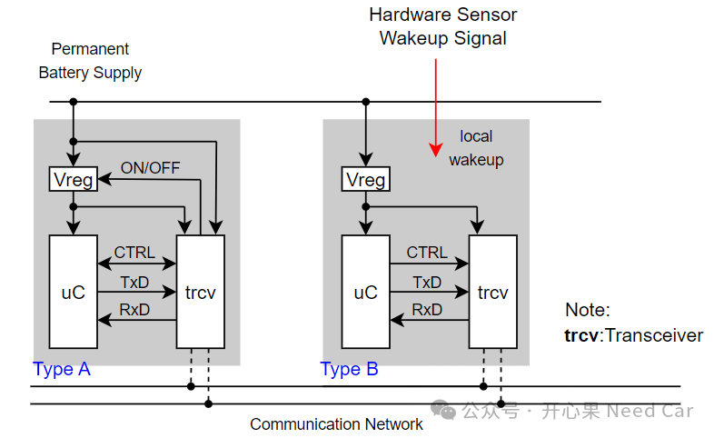
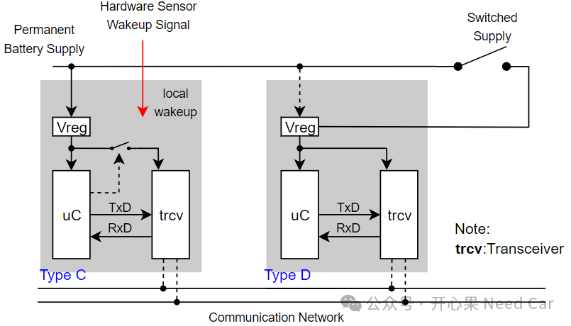

开心果 Need Car · 2024-09-06T06:36:00+08:00 · 微信原文
项目开发过程中，大家对自己开发的控制器并不陌生，但是，如果有人提出这样的问题：项目所用控制器的节点属于ABCD中的哪一个类型？你能否回答？本文，就聊一聊这个有点"偏"的知识点。
1、控制器的节点类型如何划分
在整车EEA（Electrical/Electronic Architecture，电子电器架构）中，包含各种类型的控制器，每个控制器的PCB（Printed Circuit Board，印刷电路板）也各不相同。由于每个控制器的功能和角色不同，在设计时，控制器的节点（Node）个数、供电方式、唤醒方式也会有所不同。
在搞清楚问题之前，需要先区分“控制器”和“节点”的区别。一个控制器，根据功能需求，可能会使用不同的总线协议，eg：CAN/Lin/Flexray/Ethernet等，而针对每种总线（BUS）又会使用不同数量的Node，比如：我们常说的1路CAN，其实就是指1个CAN Node。如果控制器包含2路CAN、4路Lin、1路Ethernet，我们可以说这个控制器包含7个节点（Node）：2个CAN Node、4个Lin Node以及1个Ethernet Node。控制器和Node，示意如下：

每个控制器除了Node个数不同，每个Node在唤醒方式和供电方式上也会有所不同。所以，要区分每个Node的类型，我们就需要从Node的供电方式和唤醒方式聊起。
（一）Node的供电方式和唤醒方式
A、B类型的Node，uC（microcontroller）和Transceiver的供电方式、唤醒方式如下所示：


对于Type C类型的节点，因为常电源（Permanent Battery，eg：KL30）一直保持着uC的供电状态。所以，uC一直处于供电状态，而且uC可以控制transceiver的供电状态。所以，相对于Type B节点，Type C类型的节点更节省能量，因为在低功耗模式下，transceiver可以完全断电。uC可以通过本地唤醒源唤醒（local wakeup），之后，重新使能uC和transceiver的供电，进而恢复通信，使系统进入工作模式。
对于Type D类型的节点，对于该类型的节点，唤醒方式主要受Switched Supply影响，比如：KL15硬线。如果KL15进入ON模式，电源管理模块（Vreg）唤醒，进而给uC和transceiver供电，系统进入正常工作模式。
提示：Permanent Battery除了KL30以外，一些高端新能源车上还可以指超级电容。在一些功能安全要求的范畴内，KL30和超级电容两类常电互补，以便给控制器提供稳定电源。
往期精彩回顾